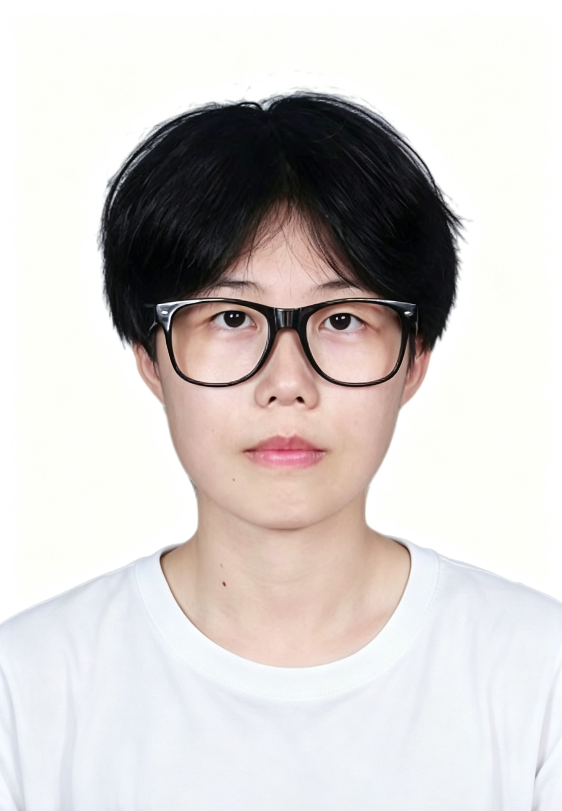

上海交通大学 · 计算机学院博士生
密码学 × AI · 从理论到同态加密 · 热爱用代码解决复杂问题
我是耿欣阳，目前在上海交通大学计算机学院攻读博士学位。本科毕业于山东大学网络空间安全学院，专业排名前 15%。
研究方向聚焦于密码学与AI的结合。熟练使用 Python、C++ 进行开发，对 PyTorch、TensorFlow 等深度学习框架有深入实践。同时积极拥抱 AI 辅助编程工具（Claude Code、Codex）来提升开发效率。
CET-6，能够熟练阅读英文专业文献，使用 LaTeX 撰写学术文档。
博士研究生
本科 · 专业前 15%
暂无已发表论文，敬请期待。
基于 Pianist 构建支持 SM9 签名的分布式零知识证明系统，将原有密码算法替换为国密算法。独立完成 Zkrypt 零知识证明算法库的 Go 语言重写（GBN 库），补充了 BN 椭圆曲线族相关算法在 Go 生态中的实现。
负责数据处理、预测建模与优化求解全流程。基于相关性分析、曲线拟合与时间序列方法预测品类销量和需求趋势，构建线性规划与整数规划模型，求解最优定价与补货方案，并通过统计检验与敏感性分析评估关键变量的影响。
设计实现基于国密 SM2、KP-PRE 代理重加密与抗量子算法 Kyber 的数据后量子迁移代理转加密系统。主要负责国密算法实现与 PyQt 界面开发，完成系统功能测试与验证。
2023 · 核心成员
2023 · 队长
2024 · 成员
2025 · 队长
"建行杯"互联网+ 省级金奖 · 亚太数模二等奖 · 美赛 H 奖 · 三次学业二等奖学金 · 三次特长奖学金 · 校级优秀毕业生 · 创新创业活动先进个人